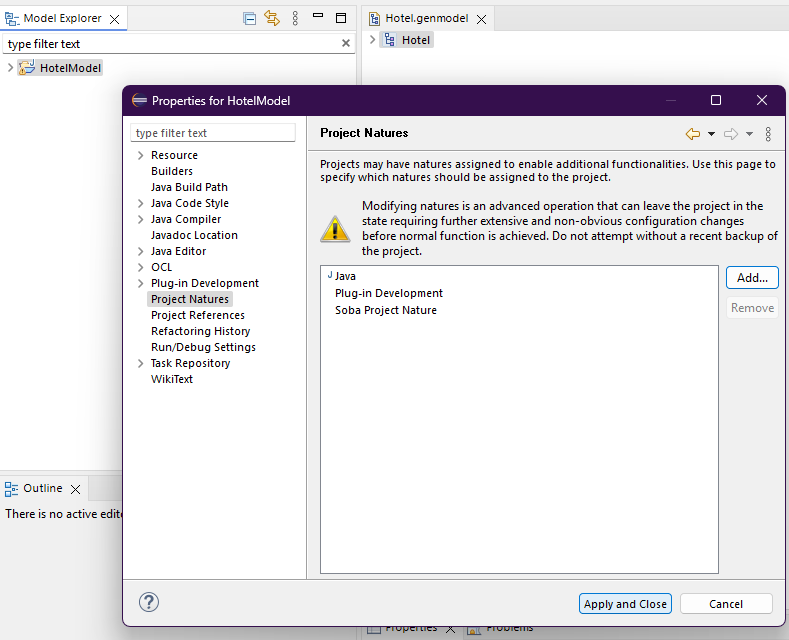

Getting Started with SOBA Assistant
SOBA Assistant is a modelling helper plugin integrated into the Eclipse IDE. Follow these steps to begin using it with your EMF (Eclipse Modeling Framework) projects:
🛠Step 1: Create a New EMF Project
In Eclipse, go to File > New > EMF Project.


📄 Step 2: Load Your Metamodel
Choose your .ecore file and set the generator model file name.


🧠Step 3: Add SOBA Project Nature
Right-click your project, go to Properties > Project Natures, and add SOBA Project Nature.
💬 Step 4: Ask for Recommendations
Type prompts like:
create 10 rooms with numbers from 102, 5 single price 100 and 5 double price 180
SOBA sends a structured query to the LLM, which considers:
- ✅ Your current model and metamodel
- ✅ Your serialization and type configuration
- ✅ The selected model element (if any)
- ✅ Previous chat history
Results are shown in the Results View and are ready to apply.


✅ Final Notes
SOBA's architecture combines metamodel-driven validation with LLM-powered suggestions, enabling fast and precise modeling via natural language. It supports multiple modeling languages and encourages extensibility via plugin integration.